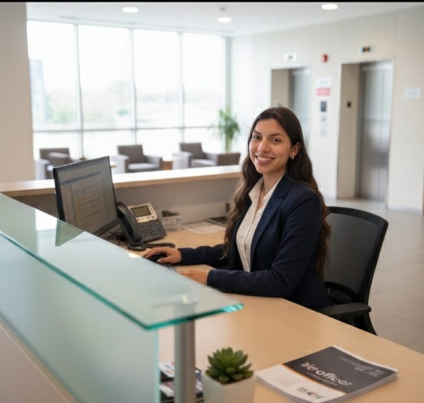
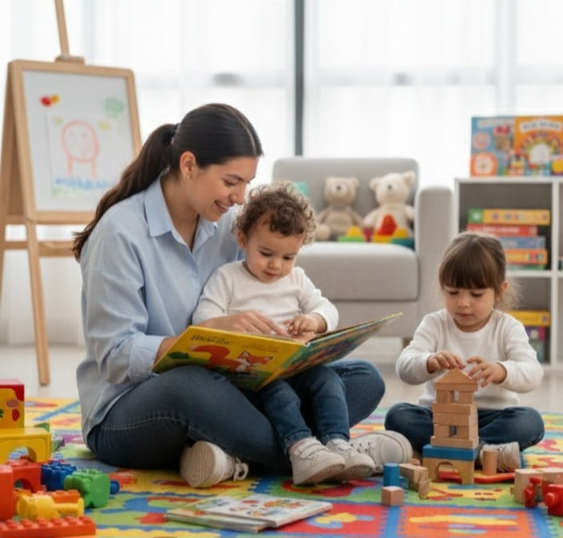

Mis Proyectos

Recepcionista
Convertirme en una recepcionista altamente calificada, capaz de representar con profesionalismo y amabilidad a la empresa.

Niñera
Brindar cuidado responsable, educativo y afectivo a los niños bajo mi responsabilidad.
Asistente
Ser una asistente confiable, proactiva y organizada que brinde apoyo eficiente a la gestión administrativa.
Auxiliar en primeros auxilios
Convertirme en una auxiliar de enfermería compasiva, competente y dedicada a brindar atención de calidad a los pacientes.

Atención al cliente
Desarrollar habilidades excepcionales en la atención al cliente, brindando un servicio amable, eficiente y personalizado.